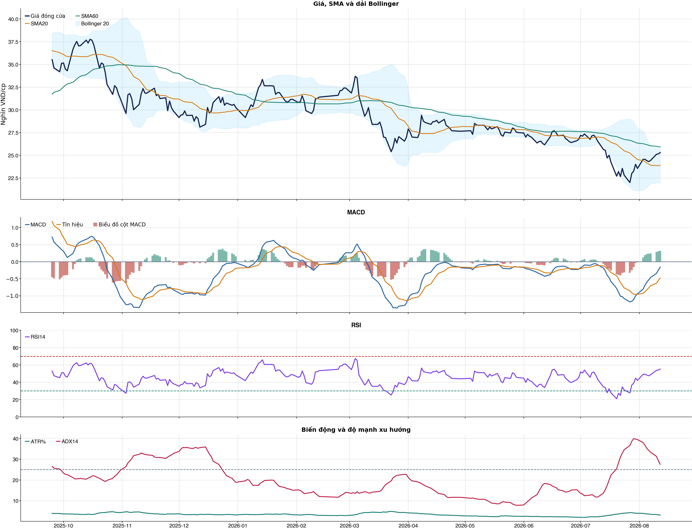
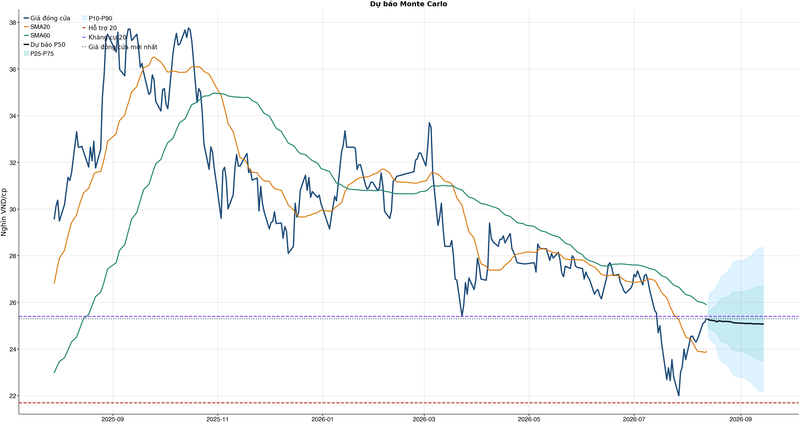
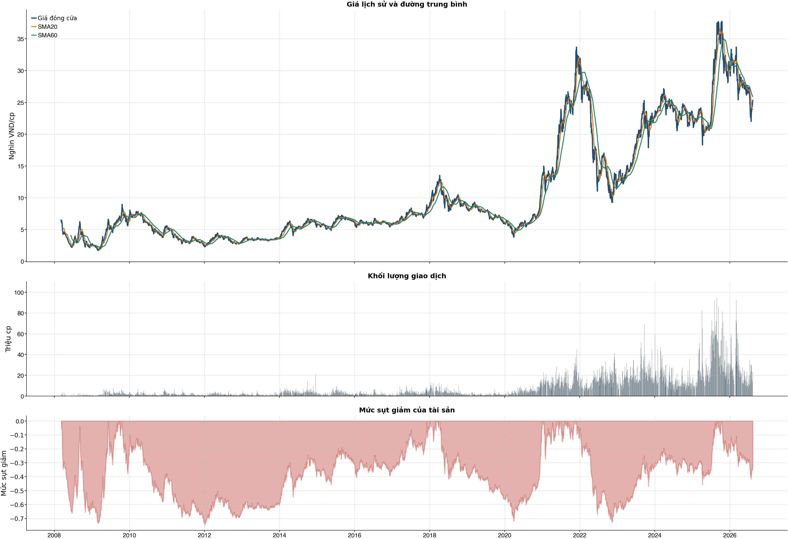

Kết quả chính
KPI đọc nhanh trước, chi tiết bấm mở bên dướiChi phí & vòng lệnh
Trọng tâm: tránh giao dịch nhiều làm phí ăn hết lợi thếKhuyến nghị hành động sau phíNO_EDGE
| Model health | BAD | Chưa tìm được ngưỡng nào có net dương và Sharpe dương sau phí trong OOS. |
| Nếu chưa có cổ phiếu | NO_EDGE | Chưa có ngưỡng sau phí đủ tốt |
| Lý do cho mua mới | Không có threshold nào trong kiểm thử OOS vừa net dương vừa Sharpe dương; không nên cố mở vị thế. | |
| Nếu đang nắm giữ | REDUCE_OR_EXIT | Model health xấu và chưa có edge sau phí; nếu đang giữ thì ưu tiên giảm tỷ trọng hoặc thoát theo kỷ luật. |
| Xác suất hiện tại | 50.0% | So với ngưỡng sau phí được chọn từ OOS. |
| Ngưỡng sau phí chọn | N/A | Chưa có threshold nào đạt net dương + Sharpe dương. |
| Baseline cấu hình | 28 vòng | Net sau phí -1.0%. |
| Reward/Risk | 2.29 | Chỉ dùng nếu decision cuối cùng cho phép mở vị thế. |
| Kỹ thuật / tin | 0 điểm | Trung tính; news warning: không; sentiment 0.00. |
Đây là lớp ra quyết định sau phí: tách riêng người chưa có cổ phiếu và người đang nắm giữ. Mua mới chỉ được xét khi model health đủ tốt, xác suất hiện tại vượt ngưỡng đã sống sót qua backtest OOS sau chi phí và các guard chính không bị phá.
Bảng chính: turnover, gross, phí và net61 / 38 / 31 / 20 / 10 / 5 / 1
| Kịch bản | Cách chọn | Vòng | Gross trước phí | Phí | Net sau phí | Sharpe | Ghi chú |
|---|---|---|---|---|---|---|---|
| Gốc | Ngưỡng gốc ≥ 0.55 | 28 | +13.7% | 13.9% | -1.0% | -0.03 | Baseline 61 vòng nếu model phát tín hiệu nhiều. |
| Ngưỡng 0.58 | Chỉ vào lệnh khi xác suất ≥ 0.58 | 7 | +2.5% | 3.5% | -1.0% | -0.17 | Tăng ngưỡng để giảm vòng lệnh. |
| Ngưỡng 0.60 | Chỉ vào lệnh khi xác suất ≥ 0.60 | 5 | +1.1% | 2.5% | -1.3% | -0.26 | Tăng ngưỡng để giảm vòng lệnh. |
| Ngưỡng 0.62 | Chỉ vào lệnh khi xác suất ≥ 0.62 | 2 | -0.8% | 1.0% | -1.8% | -0.83 | Tăng ngưỡng để giảm vòng lệnh. |
| Giới hạn 10 vòng | Tối đa 10 vòng, ưu tiên xác suất cao hơn | 10 | +1.1% | 4.9% | -3.8% | -0.61 | Ngưỡng xác suất trong nhóm: 57.3%. |
| Giới hạn 5 vòng | Tối đa 5 vòng, ưu tiên xác suất cao hơn | 5 | +1.1% | 2.5% | -1.3% | -0.26 | Ngưỡng xác suất trong nhóm: 60.5%. |
| Giới hạn 1 vòng | Tối đa 1 vòng, ưu tiên xác suất cao hơn | 1 | -0.4% | 0.5% | -0.9% | -0.58 | Ngưỡng xác suất trong nhóm: 66.3%. |
Đọc bảng này từ trái sang phải: số vòng càng ít thì phí càng thấp, nhưng kết quả sau phí vẫn chỉ là kiểm thử OOS. Các dòng 10/5/1 giới hạn số vòng bằng xác suất model cao hơn, không phải chọn lệnh thắng sau khi biết kết quả và không tự biến NO_EDGE thành BUY.
Breakdown trước phí / sau phívì sao gross dương nhưng net âm
| Kịch bản trước chi phí | +13.7% | Gross PnL 13,727,629 VND; chưa trừ commission/slippage/tax. |
| Chi phí giao dịch | -13.9% | 28 vòng; entry 20.0 bps + exit 30.0 bps = 50.0 bps/vòng; tổng phí 13,379,123 VND. |
| Kịch bản sau chi phí | -1.0% | Net PnL -973,123 VND; gross - cost gap khoảng +14.7%. |
| Ngưỡng phí hòa vốn | 49.5 bps/vòng | Phí hiện tại 50.0 bps/vòng; cao hơn ngưỡng này thì gross dương vẫn có thể thành net âm. |
| Kết luận hành động | CHƯA CÓ LỢI THẾ (NO_EDGE) | Không mở vị thế mới; nếu đang giữ thì xem khung HOLD/REDUCE/SELL riêng theo model health, kỹ thuật, tin và stop-loss. |
| Cách cải thiện cần test | Giảm turnover | Hiện có 28 phiên active/28 vòng; nên test threshold 0.58/0.60/0.62 hoặc giữ nhiều phiên hơn. |
Kiểm thử chiến lược ngoài mẫu sau chi phí28 vòng
| Lợi nhuận ròng | -1.0% | 738 quan sát ngoài mẫu |
| Sharpe | -0.03 | Sau chi phí |
| Mức sụt giảm tối đa | -8.2% | 28 vòng giao dịch |
| Chi phí giả định | 50.0 bps | Một vòng mua và bán |
So sánh mô hìnhXGBoost vs Logistic
| XGBoost | 0.500 | AUC 0.546 |
| Logistic | 0.541 | AUC 0.551 |
| Đa số | 0.500 | Mốc so sánh |
Mức độ quan trọng của đặc trưngtop feature
| volume_z_20 | 14.79 | Mức đóng góp |
| relative_strength_20d | 14.58 | Mức đóng góp |
| stoch_k_14 | 14.49 | Mức đóng góp |
| return_1d | 13.69 | Mức đóng góp |
| beta_60d | 13.60 | Mức đóng góp |
| macd_hist_pct | 12.96 | Mức đóng góp |
| return_20d | 12.07 | Mức đóng góp |
| market_return_1d | 11.92 | Mức đóng góp |
Điều kiện phát hành tín hiệuCHƯA CÓ LỢI THẾ (NO_EDGE)
| AUC của mô hình | ĐẠT | Điều kiện phát hành tín hiệu |
| Độ chính xác cân bằng của mô hình | KHÔNG ĐẠT | Điều kiện phát hành tín hiệu |
| XGBoost vượt mô hình Logistic đối chứng | KHÔNG ĐẠT | Điều kiện phát hành tín hiệu |
| Xác suất tăng đạt ngưỡng | KHÔNG ĐẠT | Điều kiện phát hành tín hiệu |
| Bối cảnh kỹ thuật đạt ngưỡng | KHÔNG ĐẠT | Điều kiện phát hành tín hiệu |
| Tỷ lệ lợi nhuận/rủi ro đạt ngưỡng | ĐẠT | Điều kiện phát hành tín hiệu |
| Dữ liệu còn mới | ĐẠT | Điều kiện phát hành tín hiệu |
| Có khối lượng vị thế hợp lệ | ĐẠT | Điều kiện phát hành tín hiệu |
| Có kết quả kiểm thử chiến lược ngoài mẫu | ĐẠT | Điều kiện phát hành tín hiệu |
| Mẫu kiểm thử chiến lược đủ lớn | ĐẠT | Điều kiện phát hành tín hiệu |
| Kiểm thử chiến lược có lợi thế ròng | KHÔNG ĐẠT | Điều kiện phát hành tín hiệu |
Quản trị rủi rostop / target
| Rủi ro/lệnh | 1.0% | 1,000,000 VND |
| Mức dừng lỗ | 24.15 | Rủi ro mỗi cổ phiếu 1.28 |
| Mục tiêu 1 | 28.37 | Lợi nhuận/rủi ro 2.29 |
| Mục tiêu 2 | 28.37 | Dự báo/kháng cự |
Kỹ thuật
Biểu đồ mở sẵn, bảng tín hiệu thu gọnBiểu đồ kỹ thuật

Tín hiệu kỹ thuậtchi tiết
| Xu hướng | Cẩn thận | Giá nằm dưới SMA60. |
| MACD | Tích cực | MACD trên signal, histogram dương. |
| RSI14 | Tích cực | RSI 55.2. |
| Bollinger | Ổn định | Giá nằm trong dải Bollinger. |
| ADX | Xu hướng giảm | ADX 27.5, -DI vượt +DI. |
| Thanh khoản | Bình thường | 0.71 lần trung bình. |
| Stochastic | Cực trị | %K 97.3, %D 95.4. |
Cơ bản & tin tức
Các bảng dài để trong nút bungPhân tích cơ bảnBCTC/tỷ số
| P/E | 11.73 | 2026-Q2 |
| P/B | 1.55 | 2026-Q2 |
| P/S | 4.41 | 2026-Q2 |
| ROE | 13.4% | 2026-Q2 |
| ROA | 5.0% | 2026-Q2 |
| Gross margin | 63.9% | 2026-Q2 |
| Net margin | 33.7% | 2026-Q2 |
| Debt/Equity | 1.37 | 2026-Q2 |
| Current ratio | 1.65 | 2026-Q2 |
| NPL | 0.0% | 2026-Q2 |
| Dividend yield | 0.0% | 2026-Q2 |
| Market cap | 62,902.6 tỷ | 2026-Q2 |
| Revenue Growth | 10.9% | 2026-Q2 YoY |
| Profit Growth | 27.0% | 2026-Q2 YoY |
| Dòng tiền từ HĐKD | -2,791.9 tỷ | 2026-Q2 |
| CAPEX | -45.0 tỷ | 2026-Q2 |
| Lợi nhuận sau thuế | 1,231.9 tỷ | 2026-Q2 |
| Lợi nhuận hoạt động | 1,528.7 tỷ | 2026-Q2 |
| Tiền và tương đương tiền | 531.5 tỷ | 2026-Q2 |
| Vay ngắn hạn | 54,038.3 tỷ | 2026-Q2 |
| Vay dài hạn | 0.0 tỷ | 2026-Q2 |
| Tổng tài sản | 96,460.6 tỷ | 2026-Q2 |
| Tổng nợ phải trả | 55,736.6 tỷ | 2026-Q2 |
| Vốn chủ sở hữu | 40,724.0 tỷ | 2026-Q2 |
| Khoản phải thu | 1,131.6 tỷ | 2026-Q2 |
| Dòng tiền tự do (CFO - CAPEX) | -2,836.9 tỷ | 2026-Q2 |
| CFO / Lợi nhuận sau thuế | -2.27 | 2026-Q2 |
| Nợ vay ròng | 53,506.7 tỷ | 2026-Q2 |
| Nợ vay / Vốn chủ sở hữu | 1.33 | 2026-Q2 |
| Phải thu / Tổng tài sản | 1.2% | 2026-Q2 |
Tin tức doanh nghiệpresearch only
| Trạng thái | Có dữ liệu | research_only |
| Nguồn / số bài | VCI | 50 |
| Bài đủ timestamp | 50 | Chỉ các bài này mới được phép dùng point-in-time |
| Sentiment 5 ngày | 0.00 | 1.0 bài trước cutoff |
| Phương pháp | keyword_heuristic_v1 | Research only; chưa dùng làm tín hiệu mua/bán |
Dự báo
Kịch bản giá và lịch sử drawdownDự báo ngắn hạn20 phiên
| 2026-08-13 | 25.27 | P10 24.66 / P90 25.99 |
| 2026-08-14 | 25.24 | P10 24.37 / P90 26.43 |
| 2026-08-17 | 25.21 | P10 24.23 / P90 26.56 |
| 2026-08-18 | 25.16 | P10 24.05 / P90 26.75 |
| 2026-08-19 | 25.21 | P10 23.63 / P90 26.82 |
| 2026-08-20 | 25.21 | P10 23.57 / P90 27.01 |
| 2026-08-21 | 25.18 | P10 23.41 / P90 27.17 |
| 2026-08-24 | 25.19 | P10 23.34 / P90 27.28 |
Lịch giao dịch Việt Nam dùng cho forecastkhông tính T7/CN/lễ
VN stock calendar: loại Thứ Bảy/Chủ Nhật và các ngày nghỉ 2026 đã công bố; ngày làm bù Thứ Bảy không được tính là phiên giao dịch chứng khoán.
Ngày nghỉ đã loại: 2026-01-01, 2026-01-02, 2026-02-16, 2026-02-17, 2026-02-18, 2026-02-19, 2026-02-20, 2026-04-27, 2026-04-30, 2026-05-01, 2026-08-31, 2026-09-01, 2026-09-02
Nếu HOSE/HNX/UPCoM công bố nghỉ đột xuất, cần thêm ngày đó vào config `market_holidays` rồi chạy lại report.
Biểu đồ dự báo

Lịch sử giá và mức sụt giảm

Báo cáo dùng để học tập và lập kịch bản, không phải khuyến nghị mua/bán.
Phân tích AI có kiểm chứngbấm mở
Trạng thái quyết định: NO_EDGE
Tóm tắt: ML decision hiện giữ nguyên NO_EDGE. News Reader đã trích đoạn có nguồn của 4 bài để phân loại chủ đề (ket_qua_kinh_doanh: 3, co_tuc_va_hanh_dong_doanh_nghiep: 2, vi_mo: 4, nganh: 3, rui_ro: 2), nhưng các trích đoạn này không tạo bằng chứng mới cho quyết định đầu tư.
Kỹ thuật: Artifact kỹ thuật: bias Trung tính; điểm 0. Chi tiết artifact: Xu hướng: Cẩn thận (Giá nằm dưới SMA60.); MACD: Tích cực (MACD trên signal, histogram dương.); RSI14: Tích cực (RSI 55.2.); Bollinger: Ổn định (Giá nằm trong dải Bollinger.); ADX: Xu hướng giảm (ADX 27.5, -DI vượt +DI.); Thanh khoản: Bình thường (0.71 lần trung bình.); Stochastic: Cực trị (%K 97.3, %D 95.4.)
Cơ bản: Artifact cơ bản: Chứng khoán SSI; kỳ 2026-Q2; P/E 11.73; P/B 1.55; ROE 13.4%; ROA 5.0%; Debt/Equity 1.37; Revenue Growth 10.9%; Profit Growth 27.0%.
Tin tức: Đã đọc trích đoạn giới hạn của 4 bài; phân nhóm rule-based: ket_qua_kinh_doanh: 3, co_tuc_va_hanh_dong_doanh_nghiep: 2, vi_mo: 4, nganh: 3, rui_ro: 2. Tác động cần kiểm chứng: Đối chiếu doanh thu/lợi nhuận trong bài với BCTC và kỳ vọng thị trường. Kiểm tra ngày GDKHQ, tỷ lệ, nguồn chi trả và nguy cơ pha loãng trước khi đánh giá tác động. Đối chiếu thời điểm công bố và kênh tác động lãi suất/tỷ giá với mô hình kinh doanh. So sánh tín hiệu ngành với thị phần, nhu cầu và đối thủ trước khi suy luận cho riêng doanh nghiệp. Xác minh công bố chính thức, phạm vi ảnh hưởng và khả năng định lượng rủi ro. Đây không phải sentiment hay dự báo tác động giá.
Live research: Live snapshot lấy lúc 2026-08-12T17:22:17.679618+00:00; News Reader đọc được 4 bài. ML có 5 lý do guard và vẫn là NO_EDGE. Không dùng tin live để train/backtest.
Rủi ro cần kiểm chứng
- ML guard: Balanced accuracy 0.500 < 0.520
- ML guard: XGBoost chưa vượt logistic baseline: AUC XGBoost=0.5463285098522167, AUC logistic=0.5505618842364532
- ML guard: Probability 50.0% < 55.0%
- ML guard: Technical score 0 < 2
- ML guard: Lợi thế OOS ròng không đạt: return=-0.009731229999999313, Sharpe=-0.029982760617571127
- News Reader: Đối chiếu doanh thu/lợi nhuận trong bài với BCTC và kỳ vọng thị trường.
- News Reader: Kiểm tra ngày GDKHQ, tỷ lệ, nguồn chi trả và nguy cơ pha loãng trước khi đánh giá tác động.
- News Reader: Đối chiếu thời điểm công bố và kênh tác động lãi suất/tỷ giá với mô hình kinh doanh.
- News Reader: So sánh tín hiệu ngành với thị phần, nhu cầu và đối thủ trước khi suy luận cho riêng doanh nghiệp.
- News Reader: Xác minh công bố chính thức, phạm vi ảnh hưởng và khả năng định lượng rủi ro.
- Chỉ lưu trích đoạn giới hạn để kiểm chứng nguồn; không lưu hay hiển thị toàn văn bài báo.
- Phân nhóm là keyword rule-based để định tuyến research, không phải sentiment hay dự báo tác động giá.
- Dữ liệu News Reader chỉ phục vụ research/report; không dùng làm feature train/backtest khi chưa có lịch sử available_at point-in-time.
- Tin live/trích đoạn cần mở URL gốc để kiểm chứng bối cảnh, số liệu và thời điểm trước khi sử dụng.
Bằng chứng
- ML decision artifact: NO_EDGE. Balanced accuracy 0.500 < 0.520
- ML decision artifact: NO_EDGE. XGBoost chưa vượt logistic baseline: AUC XGBoost=0.5463285098522167, AUC logistic=0.5505618842364532
- ML decision artifact: NO_EDGE. Probability 50.0% < 55.0%
- ML decision artifact: NO_EDGE. Technical score 0 < 2
- ML decision artifact: NO_EDGE. Lợi thế OOS ròng không đạt: return=-0.009731229999999313, Sharpe=-0.029982760617571127
- News Reader [Tin nhanh chứng khoán]: SSI: Ngày GDKHQ trả cổ tức năm 2025 bằng tiền (10%), cổ phiếu thưởng (5:1) - Tin nhanh chứng khoán | nhóm: ket_qua_kinh_doanh, co_tuc_va_hanh_dong_doanh_nghiep, vi_mo (2026-08-10T05:38:49+00:00)
- News Reader [Tạp chí Kinh tế - Tài chính Online]: Điểm danh những mã cổ phiếu đáng chú ý trong tháng 8 - Tạp chí Kinh tế - Tài chính Online | nhóm: ket_qua_kinh_doanh, vi_mo, nganh, rui_ro (2026-08-07T03:01:54+00:00)
- News Reader [Nhịp sống kinh doanh]: 9 quỹ của “cá mập” Dragon Capital, SSI và VinaCapital lỗ đầu tư hơn 6. - Nhịp sống kinh doanh | nhóm: co_tuc_va_hanh_dong_doanh_nghiep, vi_mo, nganh, rui_ro (2026-08-10T01:09:23+00:00)
- News Reader [Vietnam.vn]: SSI Research: Tháng 8 có thể là thời điểm xuất hiện cơ hội trên thị trường chứng khoán - Vietnam.vn | nhóm: ket_qua_kinh_doanh, vi_mo, nganh (2026-08-08T12:14:54+00:00)
Báo cáo chỉ tổng hợp artifact đã lưu để nghiên cứu; không phải khuyến nghị mua/bán. Quyết định và vị thế vẫn bị khóa theo signal_decision.json.
Tác động của tin lên model
Trạng thái: research_only · Áp vào signal chính: not_applied
Khuyến nghị hệ thống: Chỉ hiển thị như shadow/research, chưa thay signal chính.
Gate chưa đạt: min_articles_60, min_feature_rows_30, news_feature_gain_positive, auc_at_least_0_55, balanced_accuracy_at_least_0_52
News feature importance
| Feature tin | Gain |
|---|---|
| news_count_lookback | 0.000 |
| news_sentiment_mean_lookback | 0.000 |
| news_positive_count_lookback | 0.000 |
| news_negative_count_lookback | 0.000 |
| news_earnings_count_lookback | 0.000 |
| news_corporate_action_count_lookback | 0.000 |
| news_legal_count_lookback | 0.000 |
| news_source_count_lookback | 0.000 |
Điều kiện bật news vào signal chính
| Gate | Kết quả |
|---|---|
| min_articles_60 | Chưa đạt |
| min_feature_rows_30 | Chưa đạt |
| news_feature_gain_positive | Chưa đạt |
| auc_at_least_0_55 | Chưa đạt |
| balanced_accuracy_at_least_0_52 | Chưa đạt |
CSV dựng từ live snapshots chỉ phù hợp smoke test/research; cần lịch sử available_at dài hơn trước khi dùng production.
Tin web đã lấyheadline + nguồn
| Nguồn | Tiêu đề | Thời điểm | Link |
|---|---|---|---|
| Tin nhanh chứng khoán | SSI: Ngày GDKHQ trả cổ tức năm 2025 bằng tiền (10%), cổ phiếu thưởng (5:1) - Tin nhanh chứng khoán | 2026-08-10T05:38:49+00:00 | Mở nguồn |
| Tạp chí Kinh tế - Tài chính Online | Điểm danh những mã cổ phiếu đáng chú ý trong tháng 8 - Tạp chí Kinh tế - Tài chính Online | 2026-08-07T03:01:54+00:00 | Mở nguồn |
| Nhịp sống kinh doanh | 9 quỹ của “cá mập” Dragon Capital, SSI và VinaCapital lỗ đầu tư hơn 6. - Nhịp sống kinh doanh | 2026-08-10T01:09:23+00:00 | Mở nguồn |
| 24HMoney | 9 cổ phiếu được SSI đánh giá tích cực, có mã còn tiềm năng tăng tới 50% - 24HMoney | 2026-08-07T07:05:03+00:00 | Mở nguồn |
| Vietnam.vn | SSI Research: Tháng 8 có thể là thời điểm xuất hiện cơ hội trên thị trường chứng khoán - Vietnam.vn | 2026-08-08T12:14:54+00:00 | Mở nguồn |
| Vietcap Trading | Mới nhất: 9 cổ phiếu hot có thể lọt rổ FTSE GEIS trong kỳ nâng hạng tháng 9 - Chi tiết bài viết - Vietcap Trading | 2026-08-07T06:15:00+00:00 | Mở nguồn |
| MoneyF | 9 cổ phiếu được dự báo vào rổ FTSE GEIS, 5 mã đứng trước nguy cơ bị loại - MoneyF | 2026-08-07T04:48:00+00:00 | Mở nguồn |
News Reader: bài đã đọc và trích đoạnbấm mở trích đoạn
| Nguồn | Tiêu đề | Nhóm | Thời điểm | Trích đoạn đã đọc | Link |
|---|---|---|---|---|---|
| Tin nhanh chứng khoán | SSI: Ngày GDKHQ trả cổ tức năm 2025 bằng tiền (10%), cổ phiếu thưởng (5:1) - Tin nhanh chứng khoán | ket_qua_kinh_doanh, co_tuc_va_hanh_dong_doanh_nghiep, vi_mo | 2026-08-10T05:38:49+00:00 | Xem trích đoạn- Ngày giao dịch không hưởng quyền: 17/8/2026 - Lý do mục đích: Chi trả cổ tức năm 2025 bằng tiền; Phát hành cổ phiếu để tăng vốn cổ phần từ nguồn vốn chủ sở hữu - Tỷ lệ thực hiện: 10%/cổ phiếu (01 cổ phiếu được nhận 1.000 đồng) + Đối với chứng khoán lưu ký: Người sở hữu chứng khoán làm thủ tục nhận cổ tức bằng tiền tại các Thành viên lưu ký nơi mở tài khoản lưu ký + Đối với chứng khoán chưa lưu ký: Người sở hữu chứng khoán làm thủ tục nhận cổ tức bằng tiền tại Trụ sở chính Công ty số 72 Nguyễn Huệ, Phường Sài Gòn, Tp. Hồ Chí Minh hoặc Chi nhánh Hà Nội của Công ty số 1C Ngô Quyền, Phường Hoàn Kiếm, TP. Hà Nội (vào các ngày làm việc trong tuần) bắt đầu từ ngày 14/9/2026 và xuất trình căn cước công dân/căn cước. b) Phát hành cổ phiếu để tăng vốn cổ phần từ nguồn vốn chủ sở hữu - Tỷ lệ thực hiện: 5:1 (Người sở hữu 05 cổ phiếu sẽ được nhận thêm 01 cổ phiếu mới) - Số lượng cổ phiếu dự kiến phát hành: 500.219.550 cổ phiếu TMW: Ngày GDKHQ trả cổ tức năm 2025 bằng tiền (20%) X20: Ngày GDKHQ trả cổ tức năm 2025 bằng tiền (10%) VSH: Ngày GDKHQ tạm ứng cổ tức năm 2026 bằng tiền (15%) MBS: Ngày GDKHQ trả cổ tức năm 2025 bằng tiền (10%) BCF: Ngày GDKHQ trả cổ tức đợt 3 năm 2025 bằng cổ phiếu (100:11) BRR: Ngày GDKHQ trả cổ tức năm 2025 bằng tiền mặt (8%) DMX: Ngày GDKHQ chi trả cổ tức bằng tiền (40%) SGR: Ngày GDKHQ trả cổ tức năm 2024 bằng cổ phiếu (10:2) VIX: Ngày GDKHQ trả cổ tức năm 2025 bằng cổ phiếu (20:1) QNS: Ngày GDKHQ tạm ứng cổ tức đợt 1 năm 2026 bằng tiền (10%) KTL: Ngày GDKHQ trả cổ tức năm 2025 bằng tiền (7%) DQC: Ngày GDKHQ tạm ứng cổ tức bằng tiền năm 2026 (5%) PTB: Ngày GDKHQ tạm ứng cổ tức đợt 1 năm 2026 bằng tiền (10%) NQB: Ngày GDKHQ trả cổ tức năm 2025 bằng tiền (4%) DNA: Ngày GDKHQ trả cổ tức năm 2025 bằng tiền (15%) TVS: Ngày GDKHQ trả cổ tức năm 2025 bằng cổ phiếu (100:7) FT1: Ngày GDKHQ trả cổ tức năm 2025 bằng tiền (44,07%) SSI: Ngày GDKHQ trả cổ tức năm 2025 bằng tiền (10%), cổ phiếu thưởng (5:1) Quyết định 40: "Bắt sóng" những cổ phiếu vốn Nhà nước sắp tái cơ cấu sở hữu Lãi suất liên ngân hàng bất ngờ vọt tăng sau khi hạ về mức thấp lịch sử Becamex IDC (BCM): Lợi nhuận nửa đầu năm 2026 lao dốc, nợ vay lên tới hơn 26.300 tỷ đồng SACOMBANK (STB) miễn nhiệm 2 Phó tổng giám đốc MBS: Khuyến nghị khả quan dành cho cổ phiếu VPB MBS: Chọn MWG và VNM cho chiến lược đầu tư 2026 MBS: Khuyến nghị khả quan dành cho cổ phiếu PVS và PLX MBS: Khuyến nghị khả | Mở nguồn |
| Tạp chí Kinh tế - Tài chính Online | Điểm danh những mã cổ phiếu đáng chú ý trong tháng 8 - Tạp chí Kinh tế - Tài chính Online | ket_qua_kinh_doanh, vi_mo, nganh, rui_ro | 2026-08-07T03:01:54+00:00 | Xem trích đoạnSau giai đoạn tăng mạnh trong nửa đầu năm, thị trường chứng khoán Việt Nam đã trải qua một nhịp điều chỉnh đáng kể trong tháng 7. VN-Index đóng cửa tháng tại 1.735,8 điểm, giảm 6,7% so với tháng trước trước khi phục hồi khoảng 4% từ vùng đáy. Diễn biến này phản ánh cả những yếu tố riêng của thị trường trong nước, như các lo ngại pháp lý tại một số doanh nghiệp niêm yết, mặt bằng lãi suất cao và tâm lý thận trọng của nhà đầu tư, đồng thời phù hợp với xu hướng điều chỉnh tại nhiều thị trường trong khu vực. Dù vậy, nhịp điều chỉnh cũng giúp mặt bằng định giá trở nên hấp dẫn hơn. P/E dự phóng năm 2026 của thị trường hiện ở mức khoảng 12,2 lần, thấp hơn đáng kể so với giai đoạn trước. Nếu loại trừ nhóm cổ phiếu liên quan Vingroup, P/E chỉ còn khoảng 9,5 lần, tiệm cận vùng định giá thường xuất hiện khi thị trường chịu áp lực mạnh. Cùng với đó, câu chuyện nâng hạng thị trường vẫn được xem là chất xúc tác trung hạn quan trọng khi đợt phân bổ vốn thụ động đầu tiên theo FTSE dự kiến diễn ra trong tháng 9/2026 và quá trình đưa vào đầy đủ kéo dài đến tháng 9/2027. Theo SSI Research, thay vì tiếp tục tập trung dự báo điểm số của VN-Index, nhà đầu tư nên chuyển trọng tâm sang lựa chọn ngành và doanh nghiệp. Trong bối cảnh tăng trưởng lợi nhuận nửa cuối năm có thể chậm lại do hiệu ứng nền cao và chi phí vốn vẫn ở mức lớn, những doanh nghiệp có năng lực thực thi tốt, hưởng lợi từ các xu hướng tăng trưởng dài hạn sẽ có nhiều cơ hội tạo ra mức sinh lời vượt trội hơn thị trường. Báo cáo nhấn mạnh một số nhóm ngành được ưu tiên trong giai đoạn hiện nay. Trước hết là các doanh nghiệp hưởng lợi từ quá trình mở rộng năng lực sản xuất của nền kinh tế và làn sóng đầu tư công, bao gồm khu công nghiệp, logistics, điện, vật liệu xây dựng và các nhà thầu hạ tầng. Đây là những lĩnh vực được kỳ vọng tiếp tục đón dòng vốn khi Chính phủ duy trì đầu tư công là động lực tăng trưởng chủ đạo trong nửa cuối năm. Trong nhóm ngân hàng, SSI Research vẫn duy trì quan điểm chọn lọc. Báo cáo cho rằng hệ thống ngân hàng đã có thêm dư địa mở rộng tín dụng nhờ các điều chỉnh về quy định, song chi phí vốn vẫn chưa giảm đáng kể, trong khi chất lượng tài sản cần tiếp tục được theo dõi khi tỷ lệ nợ xấu và tỷ lệ bao phủ nợ xấu có dấu hiệu kém thuận lợi hơn. Điều này đồng nghĩa không phải mọi ngân hàng đều có triển vọng giống nhau, mà nhà đầu tư cần ưu tiên những tổ chức có nền tảng tài chính vững, chất lượng | Mở nguồn |
| Nhịp sống kinh doanh | 9 quỹ của “cá mập” Dragon Capital, SSI và VinaCapital lỗ đầu tư hơn 6. - Nhịp sống kinh doanh | co_tuc_va_hanh_dong_doanh_nghiep, vi_mo, nganh, rui_ro | 2026-08-10T01:09:23+00:00 | Xem trích đoạn23:42 - CTCK điểm tên 10 cổ phiếu triển vọng tích cực, phù hợp để "xuống tiền" nắm giữ trung, dài hạn 23:02 - General Motors củng cố chuỗi cung ứng linh kiện với thỏa thuận 4,5 tỷ USD 22:57 - Một doanh nghiệp sắp "phát" 3.000 đồng/cp, hơn thập kỷ bền bỉ trả cổ tức tiền mặt cao 22:25 - Lạm phát tại Mỹ tiếp tục hạ nhiệt trong tháng 7/2026 21:23 - IEA tiếp tục hạ dự báo nhu cầu dầu mỏ năm 2026 20:51 - Iran mất 95 triệu m³ khí đốt tự nhiên Sau 7 tháng đầu năm, nhiều quỹ cổ phiếu lớn ghi nhận hiệu suất âm trong bối cảnh thị trường biến động mạnh. Danh mục của các quỹ cũng có sự xáo trộn đáng kể, đặc biệt tại một cổ phiếu từng được nhiều tổ chức nắm giữ với tỷ trọng lớn. Theo dữ liệu tổng hợp từ 9 quỹ thuộc Dragon Capital, SSIAM và VinaCapital, tổng tài sản quản lý cuối năm 2025 đạt khoảng 47.721 tỷ đồng. Đến ngày 31/7/2026, quy mô này còn khoảng 41.107 tỷ đồng, giảm hơn 6.600 tỷ đồng. Hai quỹ chủ động DCVSF và DCDS lần lượt lỗ đầu tư khoảng 1.220 tỷ đồng và 889 tỷ đồng, còn DCVFMVN30 ETF khoảng 367 tỷ đồng. Đáng chú ý, DCDS vẫn hút ròng 838 tỷ đồng từ đầu năm, nhờ đó quy mô tài sản chỉ giảm nhẹ so với cuối 2025. Hai quỹ do SSIAM (SSI) quản lý là SSI-SCA và VLGF ghi nhận mức lỗ đầu tư lần lượt khoảng 592 tỷ đồng và 163 tỷ đồng. AUM của VLGF giảm từ 5.009 tỷ đồng xuống 3.906 tỷ đồng, trong khi SSI-SCA gần như đi ngang ở mức 1.269 tỷ đồng. Riêng SSI-SCA ghi nhận hiệu suất -11,45% từ đầu năm tại ngày 31/7. Ba quỹ VinaCapita l gồm VEOF, VESAF và VMEEF lần lượt lỗ đầu tư khoảng 216 tỷ, 216 tỷ và 193 tỷ đồng. Theo cập nhật gần cuối tháng 7, hiệu suất từ đầu năm của VEOF ở mức khoảng -17,2%, VESAF -13,7% và VMEEF -13,2% tại ngày 27/7. Diễn biến này xảy ra trong bối cảnh VN-Index biến động mạnh trong tháng 7. Chỉ số có thời điểm lên vùng 1.850 điểm nhưng sau đó giảm xuống 1.668 điểm ngày 22/7, trước khi hồi lên 1.735 điểm cuối tháng. Riêng phiên 22/7, VN-Index mất 3,58%, gây áp lực đáng kể lên danh mục cổ phiếu của các quỹ. Một trong những thay đổi đáng chú ý nhất trong danh mục tháng 7 nằm ở PNJ. Theo dữ liệu tổng hợp, 7 quỹ chủ động trong nhóm đã bán tổng cộng hơn 13,4 triệu cổ phiếu PNJ trong tháng 7. Trong đó, DCDS, SSI-SCA, VLGF, VEOF, VMEEF và VESAF đã bán toàn bộ. Riêng DCVSF bán hơn 2,48 triệu cổ phiếu và chỉ còn nắm gần 2 triệu đơn vị, tương đương khoảng 0,75% NAV vào cuối tháng. Động thái này diễn ra trong bối cảnh PNJ chịu áp lực lớn liên quan đến hoạt động | Mở nguồn |
| Vietnam.vn | SSI Research: Tháng 8 có thể là thời điểm xuất hiện cơ hội trên thị trường chứng khoán - Vietnam.vn | ket_qua_kinh_doanh, vi_mo, nganh | 2026-08-08T12:14:54+00:00 | Xem trích đoạn(CLO) Đánh giá về triển vọng thời gian tới, SSI Research cho biết, tháng 8 thường là giai đoạn tích cực của thị trường chứng khoán Việt Nam. Theo báo cáo mới công bố của SSI Research, thị trường chứng khoán Việt Nam trải qua một tháng 7 đầy biến động khi chịu tác động đồng thời từ nhiều yếu tố bất lợi cả trong nước và quốc tế. Những lo ngại liên quan đến vấn đề pháp lý tại một số doanh nghiệp niêm yết, mặt bằng lãi suất duy trì ở mức cao cùng diễn biến căng thẳng địa chính trị trên thế giới đã tạo áp lực lớn lên tâm lý nhà đầu tư, khiến thị trường bước vào nhịp điều chỉnh mạnh sau giai đoạn tăng nóng trước đó. Khép lại tháng 7, VN-Index dừng ở 1.735,8 điểm, giảm 6,7% so với cuối tháng 6. Dù vậy, chỉ số đã phục hồi khoảng 4% so với vùng đáy 1.668 điểm được thiết lập trong tháng, phản ánh lực cầu bắt đáy vẫn xuất hiện khi nhiều cổ phiếu lùi về vùng định giá hấp dẫn hơn. Diễn biến điều chỉnh chủ yếu tập trung ở nhóm cổ phiếu vốn hóa lớn. Thống kê của SSI Research cho thấy, 314 mã giảm giá trong tháng, trong khi chỉ có 85 mã tăng giá. Tuy nhiên, áp lực bán không lan tỏa trên diện rộng mà chủ yếu đến từ một số cổ phiếu có ảnh hưởng lớn tới chỉ số. Bức tranh theo ngành tiếp tục ghi nhận sự phân hóa rõ rệt. Các nhóm ngành mang tính phòng thủ hoặc có nền tảng cơ bản ổn định chịu áp lực điều chỉnh thấp hơn mặt bằng chung, gồm hàng tiêu dùng thiết yếu giảm 2,2%, năng lượng giảm 3,6%, bất động sản giảm 3,9% và công nghệ thông tin giảm 4,9%. Ngược lại, các nhóm ngành nhạy cảm với chu kỳ kinh tế hoặc đã tăng mạnh trong giai đoạn trước chịu áp lực bán lớn hơn. Trong đó, hàng tiêu dùng không thiết yếu giảm tới 16,7%, công nghiệp giảm 13,1%. Bên cạnh diễn biến giá cổ phiếu, thanh khoản thị trường tiếp tục ở mức thấp, phản ánh tâm lý thận trọng của dòng tiền. Giá trị giao dịch bình quân trong tháng đạt khoảng 19,3 nghìn tỷ đồng mỗi phiên, chỉ giảm nhẹ so với mức 19,9 nghìn tỷ đồng của tháng trước nhưng vẫn thấp hơn đáng kể so với mức bình quân 28 nghìn tỷ đồng/ngày trong bảy tháng đầu năm và 28,8 nghìn tỷ đồng/ngày của cả năm 2025. Giá trị khớp lệnh bình quân đạt khoảng 15,8 nghìn tỷ đồng/phiên, dù cải thiện nhẹ so với tháng trước nhưng vẫn ở mức thấp nếu so với các giai đoạn thị trường sôi động trước đây. Theo SSI Research, điều này cho thấy dòng tiền chưa thực sự quay trở lại thị trường, trong khi nhà đầu tư vẫn duy trì tâm lý thận trọng sau nhịp điều chỉnh mạnh. Điểm | Mở nguồn |
Chi tiết báo cáo tài chínhbảng dài
Kết quả kinh doanh — 4 kỳ gần nhất
Hiển thị 35 dòng đầu; mở CSV đầy đủ.
| Khoản mục | 2026-Q2 | 2026-Q1 | 2025-Q4 | 2025-Q3 |
|---|---|---|---|---|
| DOANH THU HOẠT ĐỘNG | 3,318.6 tỷ | 3,178.1 tỷ | 3,601.8 tỷ | 4,176.7 tỷ |
| Các khoản giảm trừ doanh thu | 0.0 tỷ | 0.0 tỷ | 0.0 tỷ | 0.0 tỷ |
| Doanh thu thuần về hoạt động kinh doanh | 3,318.6 tỷ | 3,178.1 tỷ | 3,601.8 tỷ | 4,176.7 tỷ |
| CHI PHÍ HOẠT ĐỘNG | -892.2 tỷ | -897.9 tỷ | -1,750.3 tỷ | -1,614.8 tỷ |
| LỢI NHUẬN GỘP | 2,426.4 tỷ | 2,280.3 tỷ | 1,851.5 tỷ | 2,561.9 tỷ |
| CHI PHÍ QUẢN LÝ CÔNG TY CHỨNG KHOÁN | -67.1 tỷ | -47.6 tỷ | -71.8 tỷ | -63.6 tỷ |
| KẾT QUẢ HOẠT ĐỘNG | 1,528.7 tỷ | 1,595.7 tỷ | 998.7 tỷ | 1,835.4 tỷ |
| CHI PHÍ THUẾ THU NHẬP DOANH NGHIỆP | 1,529.0 tỷ | 1,593.4 tỷ | 1,003.2 tỷ | 1,834.9 tỷ |
| Chi phí thuế thu nhập hiện hành | -301.7 tỷ | -300.9 tỷ | -186.9 tỷ | -352.2 tỷ |
| Chi phí thuế thu nhập hoãn lại | 4.6 tỷ | -15.0 tỷ | 3.4 tỷ | -7.2 tỷ |
| LỢI NHUẬN KẾ TOÁN SAU THUẾ | 1,231.9 tỷ | 1,277.6 tỷ | 819.7 tỷ | 1,475.6 tỷ |
| Lợi nhuận thuần phân bổ cho lợi ích của cổ đông không kiểm soát | 0.8 tỷ | -0.3 tỷ | 2.2 tỷ | 0.5 tỷ |
| Lợi nhuận sau thuế phân bổ cho chủ sở hữu | 1,231.1 tỷ | 1,277.9 tỷ | 817.5 tỷ | 1,475.1 tỷ |
| Lãi cơ bản trên cổ phiếu (VND) | 0.0 tỷ | 0.0 tỷ | 0.0 tỷ | 0.0 tỷ |
| Lãi trên cổ phiếu pha loãng (VND) | 0.0 tỷ | 0.0 tỷ | 0.0 tỷ | 0.0 tỷ |
| Doanh thu nghiệp vụ môi giới chứng khoán | 462.2 tỷ | 606.2 tỷ | 628.5 tỷ | 921.8 tỷ |
| Doanh thu hoạt động đầu tư chứng khoán, góp vốn (Trước năm 2016) | 0.0 tỷ | 0.0 tỷ | 0.0 tỷ | 0.0 tỷ |
| Doanh thu nghiệp vụ bảo lãnh phát hành chứng khoán | 3.6 tỷ | 15.4 tỷ | 5.0 tỷ | 0.0 tỷ |
| Doanh thu nghiệp vụ tư vấn đầu tư chứng khoán | 13.7 tỷ | 3.4 tỷ | 7.8 tỷ | 4.2 tỷ |
| Doanh thu lưu ký chứng khoán | 16.1 tỷ | 15.9 tỷ | 16.3 tỷ | 14.1 tỷ |
| Doanh thu hoạt động ủy thác, đấu giá (Trước năm 2016) | 0.0 tỷ | 0.0 tỷ | 0.0 tỷ | 0.0 tỷ |
| Thu cho thuê sử dụng tài sản (Trước năm 2016) | 0.0 tỷ | 0.0 tỷ | 0.0 tỷ | 0.0 tỷ |
| Doanh thu khác | 132.2 tỷ | 75.1 tỷ | 67.8 tỷ | 60.6 tỷ |
| Lãi/lỗ từ công ty liên doanh, liên kết | 0.0 tỷ | 0.0 tỷ | 0.0 tỷ | 0.0 tỷ |
| Lãi từ các tài sản tài chính ghi nhận thông qua lãi/lỗ ( FVTPL) | 1,422.0 tỷ | 1,278.1 tỷ | 1,614.0 tỷ | 2,065.6 tỷ |
| Lãi bán các tài sản tài chính FVTPL | 654.9 tỷ | 569.7 tỷ | 913.8 tỷ | 1,298.7 tỷ |
| Chênh lệch tăng đánh giá lại các TSTC thông qua lãi/lỗ | 169.9 tỷ | 215.8 tỷ | 152.9 tỷ | 176.9 tỷ |
| Cổ tức, tiền lãi phát sinh từ tài sản tài chính FVTPL | 597.3 tỷ | 492.7 tỷ | 547.3 tỷ | 590.0 tỷ |
| Lãi từ các khoản đầu tư nắm giữ đến ngày đáo hạn | 129.0 tỷ | 128.5 tỷ | 153.6 tỷ | 98.1 tỷ |
| Lãi từ các khoản cho vay và phải thu | 1,091.5 tỷ | 1,049.9 tỷ | 1,098.4 tỷ | 1,006.0 tỷ |
| Lãi từ các tài sản tài chính sẵn sàng để bán | 16.0 tỷ | 0.7 tỷ | 0.7 tỷ | 0.7 tỷ |
| Lãi từ các công cụ phát sinh phòng ngừa rủi ro | 0.0 tỷ | 0.0 tỷ | 0.0 tỷ | 0.0 tỷ |
| Doanh thu hoạt động tư vấn tài chính | 32.4 tỷ | 4.7 tỷ | 9.6 tỷ | 5.7 tỷ |
| Lỗ các tài sản tài chính ghi nhận thông qua lãi lỗ (FVTPL) | -448.5 tỷ | -504.3 tỷ | -1,094.0 tỷ | -1,022.2 tỷ |
| Lỗ bán các tài sản tài chính | -281.9 tỷ | -414.3 tỷ | -916.1 tỷ | -757.4 tỷ |
Bảng cân đối kế toán — 4 kỳ gần nhất
Hiển thị 35 dòng đầu; mở CSV đầy đủ.
| Khoản mục | 2026-Q2 | 2026-Q1 | 2025-Q4 | 2025-Q3 |
|---|---|---|---|---|
| TÀI SẢN NGẮN HẠN | 91,591.9 tỷ | 88,250.1 tỷ | 89,322.8 tỷ | 98,345.4 tỷ |
| Tiền và tương đương tiền | 531.5 tỷ | 918.8 tỷ | 3,646.5 tỷ | 254.5 tỷ |
| Tiền | 531.5 tỷ | 868.7 tỷ | 1,174.3 tỷ | 166.3 tỷ |
| Các khoản tương đương tiền | 0.0 tỷ | 50.1 tỷ | 2,472.2 tỷ | 88.2 tỷ |
| Các tài sản tài chính ghi nhận thông qua lãi lỗ (FVTPL) | 44,114.1 tỷ | 42,429.2 tỷ | 38,257.7 tỷ | 50,404.7 tỷ |
| Dự phòng suy giảm giá trị tài sản tài chính và tài sản thế chấp | -0.0 tỷ | -0.0 tỷ | -0.0 tỷ | -55.1 tỷ |
| Tổng các khoản phải thu | 1,131.6 tỷ | 3,394.2 tỷ | 2,517.0 tỷ | 1,539.4 tỷ |
| Phải thu khách hàng (Trước năm 2016) | 0.0 tỷ | 0.0 tỷ | 0.0 tỷ | 0.0 tỷ |
| Trả trước người bán | 77.0 tỷ | 1,636.5 tỷ | 1,576.8 tỷ | 832.4 tỷ |
| Phải thu nội bộ | 0.0 tỷ | 0.0 tỷ | 0.0 tỷ | 0.0 tỷ |
| Phải thu về XDCB (Trước năm 2016) | 0.0 tỷ | 0.0 tỷ | 0.0 tỷ | 0.0 tỷ |
| Phải thu khác | 233.1 tỷ | 733.3 tỷ | 523.7 tỷ | 210.9 tỷ |
| Dự phòng nợ khó đòi (Trước năm 2016) | 0.0 tỷ | 0.0 tỷ | 0.0 tỷ | 0.0 tỷ |
| Hàng tồn kho, ròng (Trước năm 2016) | 0.0 tỷ | 0.0 tỷ | 0.0 tỷ | 0.0 tỷ |
| Hàng tồn kho (Trước năm 2016) | 0.0 tỷ | 0.0 tỷ | 0.0 tỷ | 0.0 tỷ |
| Dự phòng giảm giá HTK (Trước năm 2016) | 0.0 tỷ | 0.0 tỷ | 0.0 tỷ | 0.0 tỷ |
| Tài sản ngắn hạn khác | 135.0 tỷ | 94.7 tỷ | 131.3 tỷ | 301.5 tỷ |
| Chi phí trả trước ngắn hạn | 68.5 tỷ | 82.5 tỷ | 96.8 tỷ | 57.2 tỷ |
| Thuế giá trị gia tăng được khấu trừ | 0.0 tỷ | 0.0 tỷ | 0.0 tỷ | 0.0 tỷ |
| Thuế và các khoản khác phải thu Nhà nước | 0.0 tỷ | 0.5 tỷ | 0.0 tỷ | 0.0 tỷ |
| Tài sản ngắn hạn khác | 49.8 tỷ | 1.9 tỷ | 27.8 tỷ | 233.2 tỷ |
| TÀI SẢN DÀI HẠN | 4,868.7 tỷ | 4,863.6 tỷ | 4,727.2 tỷ | 2,366.4 tỷ |
| Phải thu dài hạn | 0.0 tỷ | 0.0 tỷ | 0.0 tỷ | 0.0 tỷ |
| Phải thu khách hàng dài hạn | 0.0 tỷ | 0.0 tỷ | 0.0 tỷ | 0.0 tỷ |
| Phải thu nội bộ dài hạn (Trước năm 2016) | 0.0 tỷ | 0.0 tỷ | 0.0 tỷ | 0.0 tỷ |
| Phải thu dài hạn khác (Trước năm 2016) | 0.0 tỷ | 0.0 tỷ | 0.0 tỷ | 0.0 tỷ |
| Dự phòng phải thu dài hạn (Trước năm 2016) | 0.0 tỷ | 0.0 tỷ | 0.0 tỷ | 0.0 tỷ |
| Tài sản cố định | 176.4 tỷ | 170.5 tỷ | 187.1 tỷ | 203.0 tỷ |
| GTCL TSCĐ hữu hình | 89.4 tỷ | 74.0 tỷ | 80.1 tỷ | 87.0 tỷ |
| Nguyên giá TSCĐ hữu hình | 426.6 tỷ | 399.9 tỷ | 404.6 tỷ | 400.2 tỷ |
| Khấu hao lũy kế TSCĐ hữu hình | -337.2 tỷ | -325.9 tỷ | -324.5 tỷ | -313.2 tỷ |
| GTCL Tài sản thuê tài chính | 0.0 tỷ | 0.0 tỷ | 0.0 tỷ | 0.0 tỷ |
| Nguyên giá tài sản thuê tài chính | 0.0 tỷ | 0.0 tỷ | 0.0 tỷ | 0.0 tỷ |
| Khấu hao lũy kế tài sản thuê tài chính | 0.0 tỷ | 0.0 tỷ | 0.0 tỷ | 0.0 tỷ |
| GTCL tài sản cố định vô hình | 87.0 tỷ | 96.4 tỷ | 107.0 tỷ | 116.1 tỷ |
Lưu chuyển tiền tệ — 4 kỳ gần nhất
Hiển thị 35 dòng đầu; mở CSV đầy đủ.
| Khoản mục | 2026-Q2 | 2026-Q1 | 2025-Q4 | 2025-Q3 |
|---|---|---|---|---|
| LỢI NHUẬN TRƯỚC THUẾ | 1,529.0 tỷ | 1,593.4 tỷ | 1,003.2 tỷ | 1,834.9 tỷ |
| Khấu hao tài sản cố định | 24.7 tỷ | 24.1 tỷ | 24.6 tỷ | 25.0 tỷ |
| Các khoản dự phòng | 0.0 tỷ | -41.4 tỷ | -0.6 tỷ | -41.4 tỷ |
| Lãi, lỗ chênh lệch tỷ giá hối đoái chưa thực hiện | 3.5 tỷ | -4.7 tỷ | -9.1 tỷ | -0.3 tỷ |
| Lãi, lỗ hoạt động đầu tư | -62.3 tỷ | -132.4 tỷ | -147.0 tỷ | -7.3 tỷ |
| Chi phí lãi vay | 812.2 tỷ | 707.4 tỷ | 790.3 tỷ | 687.0 tỷ |
| Dự thu lãi và cổ tức | -1,690.1 tỷ | -1,543.1 tỷ | -1,641.7 tỷ | -1,596.8 tỷ |
| Lợi nhuận từ hoạt động kinh doanh trước thay đổi vốn lưu động | -3,394.5 tỷ | -1,533.1 tỷ | 12,348.6 tỷ | -10,873.4 tỷ |
| (-) Tăng, (+) giảm các khoản phải thu khác | 2,032.7 tỷ | -274.8 tỷ | -1,060.4 tỷ | -681.8 tỷ |
| Tăng/giảm hàng tồn kho (Trước năm 2016) | 0.0 tỷ | 0.0 tỷ | 0.0 tỷ | 0.0 tỷ |
| (+) Tăng, (-) giảm các khoản phải trả, phải nộp khác | -281.0 tỷ | 166.6 tỷ | -384.5 tỷ | -343.7 tỷ |
| Tăng/giảm chi phí trả trước | 9.6 tỷ | 16.5 tỷ | -39.5 tỷ | -17.2 tỷ |
| Tiền lãi vay đã trả | -848.2 tỷ | -677.3 tỷ | -805.1 tỷ | -649.3 tỷ |
| Thuế TNDN CTCK đã nộp | -282.3 tỷ | -547.9 tỷ | -18.7 tỷ | -228.6 tỷ |
| Tiền thu khác từ hoạt động kinh doanh | 1,538.3 tỷ | 1,381.0 tỷ | 1,646.7 tỷ | 1,743.1 tỷ |
| Tiền chi khác cho hoạt động kinh doanh | -3.3 tỷ | -80.5 tỷ | -9.1 tỷ | -3.4 tỷ |
| Lưu chuyển thuần từ hoạt động kinh doanh | -2,791.9 tỷ | -1,058.7 tỷ | 12,386.5 tỷ | -9,891.5 tỷ |
| Tiền chi để mua sắm, xây dựng TSCĐ, BĐSĐT và các tài sản dài hạn khác | -45.0 tỷ | -49.7 tỷ | -64.7 tỷ | -69.9 tỷ |
| Tiền thu từ thanh lý, nhượng bán TSCĐ, BĐSĐT và các tài sản dài hạn khác | 0.0 tỷ | 2.7 tỷ | 0.0 tỷ | 0.0 tỷ |
| Tiền chi cho vay, mua các công cụ nợ của đơn vị khác (Trước năm 2016) | 0.0 tỷ | 0.0 tỷ | 0.0 tỷ | 0.0 tỷ |
| Tiền thu hồi cho vay, bán lại các công cụ nợ của đơn vị khác (Trước năm 2016) | 0.0 tỷ | 0.0 tỷ | 0.0 tỷ | 0.0 tỷ |
| Tiền chi đầu tư góp vốn vào công ty con, công ty liên doanh, liên kết và đầu tư khác | -275.0 tỷ | 0.0 tỷ | -2,296.3 tỷ | 0.0 tỷ |
| Tiền thu hồi các khoản đầu tư góp vốn vào công ty con, công ty liên doanh, liên kết và đầu tư khác | 500.0 tỷ | 320.0 tỷ | 663.4 tỷ | 0.0 tỷ |
| Tiền thu về cổ tức lợi nhuận được chia từ các khoản đầu tư tài chính dài hạn | 58.8 tỷ | 25.3 tỷ | 33.8 tỷ | 37.7 tỷ |
| Lưu chuyển tiền thuần từ hoạt động đầu tư | 238.8 tỷ | 298.2 tỷ | -1,663.8 tỷ | -32.3 tỷ |
| Tiền thu từ phát hành cổ phiếu, nhận vốn góp của chủ sở hữu | 100.0 tỷ | 6,227.7 tỷ | -0.4 tỷ | 3,256.5 tỷ |
| Tiền chi trả vốn góp cho các chủ sở hữu, mua lại cổ phiếu của doanh nghiệp đã phát hành | 0.0 tỷ | 0.0 tỷ | 0.0 tỷ | 0.0 tỷ |
| Tiền vay gốc | 70,406.7 tỷ | 87,961.9 tỷ | 72,703.7 tỷ | 126,511.6 tỷ |
| Tiền chi trả nợ gốc vay | -68,340.8 tỷ | -96,156.7 tỷ | -77,958.8 tỷ | -122,338.7 tỷ |
| Tiền chi trả nợ thuê tài chính | 0.0 tỷ | 0.0 tỷ | 0.0 tỷ | 0.0 tỷ |
| Cổ tức, lợi nhuận đã trả cho chủ sở hữu | -0.1 tỷ | -0.1 tỷ | -2,075.2 tỷ | -0.0 tỷ |
| Lưu chuyển thuần từ hoạt động tài chính | 2,165.8 tỷ | -1,967.2 tỷ | -7,330.7 tỷ | 7,429.4 tỷ |
| LƯU CHUYỂN TIỀN THUẦN TRONG KỲ | -387.3 tỷ | -2,727.7 tỷ | 3,392.0 tỷ | -2,494.4 tỷ |
| TIỀN VÀ CÁC KHOẢN TƯƠNG ĐƯƠNG TIỀN ĐẦU KỲ | 918.8 tỷ | 3,646.5 tỷ | 254.5 tỷ | 2,748.9 tỷ |
| Ảnh hưởng của thay đổi tỷ giá hối đoái quy đổi ngoại tệ | 0.6 tỷ | -0.4 tỷ | 0.6 tỷ | 0.3 tỷ |